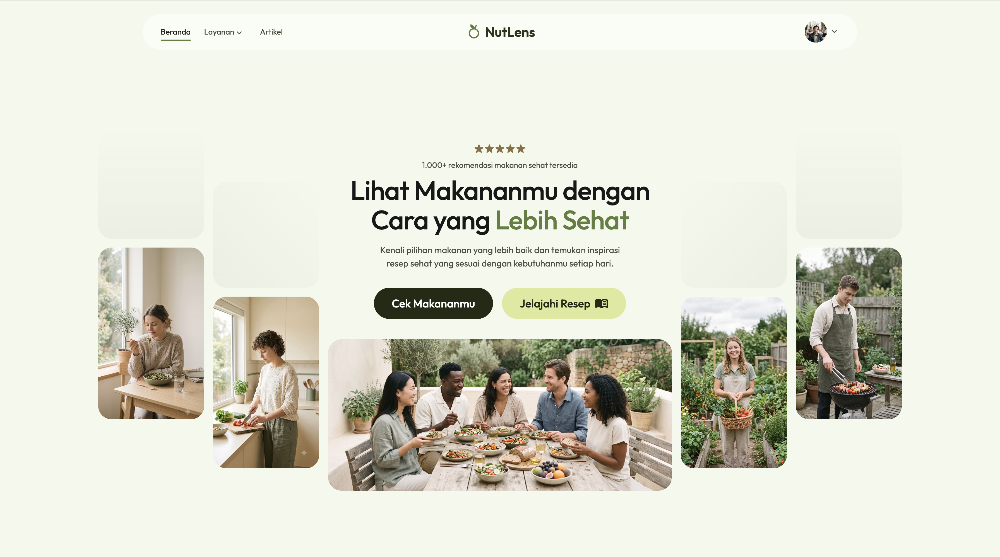
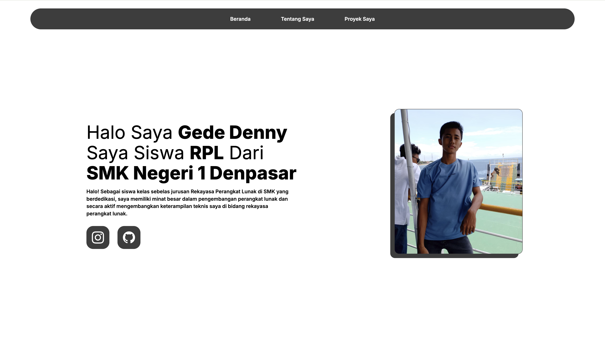
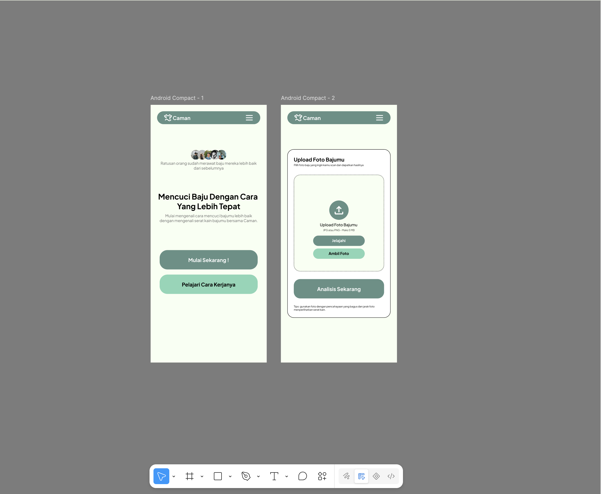

Halo! Nama saya Gede Denny saya siswa kelas 11. Selama saya belajar saya membangun fondasi yang kuat dalam HTML, CSS, dan JavaScript, serta terbiasa menggunakan GitHub dan Figma untuk keperluan kolaborasi. Saya telah mengerjakan berbagai proyek mulai dari desain UI/UX dan pengembangan frontend. Saya bercita-cita menjadi seorang Junior Developer sembari terus mengasah keterampilan saya di bidang pengembangan perangkat lunak.
Halo Saya Gede Denny
Saya Siswa RPL Dari
SMK Negeri 1 Denpasar
Halo! Sebagai siswa kelas sebelas jurusan Rekayasa Perangkat Lunak di SMK yang berdedikasi, saya memiliki minat besar dalam pengembangan perangkat lunak dan secara aktif mengembangkan keterampilan teknis saya di bidang rekayasa perangkat lunak.

face Tentang Saya

construction Proyek Terbaru Saya

Website
NutLens
Website yang dapat melakukan pengecekan makanan melalui scan dan memberikan hasil kandungan gizi dari makanan tersebut.
Lihat Proyek
Website
Portfolio
Website portfolio yang menjelaskan tentang diri saya sebagai seorang programmer.
Lihat Proyek
Website
Caman
Website yang berfokus pada mobile yang dapat melakukan pemindaian jenis kain dan menentukan cara mencuci yang tepat.
Lihat Proyek